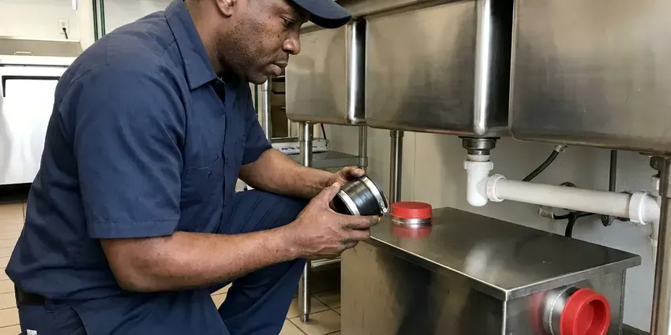

Grease Trap Cleaning in Franklin, TN
BGV Plumbing pumps and cleans grease traps and interceptors for restaurants and commercial kitchens across Franklin, TN, with documented service every visit.
- Fast Response for Overflows
- After-Hours Cleaning Available
- Prevent Clogs
- Service Logs Every Visit
Expert Grease Trap Cleaning Available in Franklin, TN.
Contact BGV Plumbing today for professional grease trap cleaning and maintenance.
Expert Grease Trap Cleaning for Businesses in Franklin, TN
Our skilled technicians at BGV Plumbing use specialized equipment to safely and effectively remove accumulated FOG and solid waste from your grease trap. Regular cleaning is crucial for preventing costly overflows, unpleasant odors, and potential health code violations in your Franklin establishment.
Our expertise includes:
- Baffle, tee and flow control inspection on every visit
- Residential under-sink grease interceptor service
- Hydro-jetting for stubborn blockages

Additional Kitchen Plumbing Services in Franklin, TN
Our kitchen plumbing services in Franklin, TN cover sinks, disposals, dishwashers, and grease traps so your kitchen stays clean, safe, and fully functional.




Grease Trap Installation in Franklin

Customers
Why Choose BGV Plumbing for Grease Trap Cleaning in Franklin, TN?
Regular cleaning extends the life of your plumbing system and prevents unpleasant odors and costly emergency repairs. BGV Plumbing ensures your grease trap is properly serviced, protecting your property and reputation.
- Prevent Backups, Regular cleaning prevents grease and food solids from hardening and causing severe drain clogs and sewage backups.
- System Longevity, Proper maintenance protects your whole drain line system from grease buildup, extending the lifespan of your pipes.
- Flexible Scheduling, We clean before opening or after close so your kitchen never gives up service time.
Citywide Coverage
We understand that commercial plumbing issues can't wait, which is why our technicians are positioned to offer complete grease trap cleaning coverage across all of Franklin, ensuring fast response times.
Experienced Team
Our plumbing technicians are extensively trained and experienced in commercial kitchen plumbing systems, including all types of grease traps. They know the best practices for FOG removal and disposal, ensuring a thorough and compliant cleaning.
Safety-First Approach
Our crews use proper confined space practices and never enter large interceptors without the right equipment. We replace lids securely so staff and customers are protected from open access points.
Trusted Certified Franklin Plumbing Services Professionals
At BGV Plumbing, we take pride in providing licensed, certified plumbing services throughout Franklin, TN. Backed by leading industry credentials, our experienced plumbers combine technical skill with genuine customer care. Whether it is repair, installation, or maintenance, we follow strict safety and quality standards to deliver lasting results you can trust.
Call Us Now PHCC Plumbing Contractor Recognition
PHCC Plumbing Contractor Recognition Better Business Bureau (BBB) Accreditation
Better Business Bureau (BBB) Accreditation Angi Certified Pro
Angi Certified Pro ISO 9001 Quality Management Certification
ISO 9001 Quality Management CertificationThorough Grease Trap Cleaning Services in Franklin, TN
Cost-Effective Grease Trap Solutions in Franklin, TN
BGV Plumbing offers competitive and transparent pricing for all grease trap cleaning services in Franklin, TN. We provide upfront estimates before any work begins, so there are no surprises. Investing in regular, professional cleaning is significantly more cost-effective than dealing with emergency drain repairs, fines from health departments, or business closures due to plumbing failures.

Indoor Grease Trap Cleaning in Franklin
Small hydromechanical traps under sinks fill quickly in busy kitchens and often need cleaning every few weeks. We remove the lid, pump or hand-scoop the grease and solids, and scrape the baffles. We check the gasket, flow control fitting and inlet for damage. Then we reassemble the unit and confirm water flows through correctly. This keeps odors down and prevents slow sink drainage.
Emergency Grease Trap Cleaning in Franklin, TN
A full grease trap can cause sinks to back up, floor drains to overflow and foul odors to fill the dining room. We respond quickly to emergency calls and can often clear the problem the same day. Our crews pump the trap, clear the lines and check for downstream blockages. If the sewer line is also clogged, we can jet it during the same visit. Fast service helps you get back to serving customers.
Grease Trap Hydro-Jetting in Franklin, TN
Sometimes, grease traps and their connecting lines develop stubborn blockages that standard pumping can't fully clear. Our hydro-jetting service uses high-pressure water streams to thoroughly scour the interior of your grease trap and the associated drain lines. This removes hardened grease, scale, and other debris, restoring full flow and preventing recurring clogs in your Franklin, TN commercial property. It's an effective way to reset your system.
Scheduled Grease Trap Maintenance Plans in Franklin
Many local pretreatment programs expect traps to be cleaned before grease and solids reach a set percentage of capacity, often around 25 percent. We set up recurring cleanings based on your volume and trap size. Our team tracks your schedule and arrives on time without reminders. Consistent maintenance helps you avoid emergency calls and violation notices. Plans can be adjusted as your business grows.
Commercial Grease Trap Pumping in Franklin
For busy restaurants and food service establishments, regular grease trap pumping is a must. Our service includes the complete removal of all FOG and solid waste from your grease trap, preventing backups and maintaining optimal kitchen drainage. We use powerful vacuum trucks capable of handling traps of all sizes, delivering a thorough clean every time for your Franklin business. This prevents hardened grease from accumulating and causing major blockages down the line.
Commercial Grease Trap Cleaning in Franklin
BGV Plumbing provides dependable grease trap cleaning for restaurants, cafeterias, and other food service establishments in Franklin. We help businesses comply with local health codes, prevent costly wastewater backups, and maintain efficient kitchen operations. Our service includes thorough FOG removal, inspection of trap components, and proper disposal of waste. Regular cleaning schedules can be matched to your business volume.

Grease Line Jetting in Franklin
Grease that escapes the trap often coats the line between the kitchen and the interceptor or the sewer. We use hydro jetting to scour the inside of the pipe and remove hardened grease. Jetting is far more effective than a standard drain snake for grease buildup. We can run a camera afterward to confirm the line is clear. This prevents repeat backups and keeps your trap working properly.
Grease Trap Cleaning Near Me in Franklin, TN
Our trucks are based nearby, so routine cleanings and emergency calls are handled without long waits. We bring vacuum equipment, jetting tools and replacement parts on every visit. You get prompt service from a team that knows your kitchen.
BGV Plumbing is dedicated to serving the local Franklin community with top-tier grease trap cleaning. Our proximity allows us to respond quickly to your service requests, whether it's for routine maintenance or an urgent clog. You can rely on us for reliable and professional plumbing solutions right in your neighborhood.
BGV Plumbing at a Glance
- Licensed and insured plumbers serving Franklin, TN
- 24/7 emergency service with same-day scheduling
- Upfront, flat-rate pricing before work begins
- 4.9-star rated by 932+ Tennessee customers
Franklin Map
Franklin Information
- Population
- 88,558
- Area codes
- 615/931/629
- Service area
- Franklin and communities within 40 miles
- Nearby
- Spring Hill, Nashville, Smyrna, Murfreesboro
For homes and businesses in Franklin, TN, diligent grease trap cleaning is crucial to combat the impact of cooking oils and fats that solidify in pipes. Rapid swings between mild and freezing weather in Franklin can stress joints and fittings over time as pipes expand and contract.
Expert Services
Trust our professionals for reliable BGV Plumbing solutions in Franklin, TN.
Our Specialized Plumbing Services in Franklin, TN
At BGV Plumbing, we provide a complete range of plumbing services across Franklin, TN. From leak detection to full system installations, our team ensures fast, precise, and affordable service for both residential and commercial properties. Explore our core services below:


How Our Grease Trap Cleaning Process Works in Franklin, TN
Our grease trap cleaning process is fast, clean and fully documented.
Request a Quote
Start by calling (615) 518-0893 or filling out our online form to schedule your grease trap cleaning service. We will discuss your needs and provide an honest, clear estimate.
On-Site Assessment
Our licensed plumber will arrive on time to assess your grease trap's condition, size, and specific cleaning requirements. We prepare the area to minimize disruption.
Thorough Cleaning
We use specialized equipment to safely remove all FOG, solids, and wastewater from your grease trap. Our process delivers a complete cleaning of the trap's interior and baffles.
Frequently Asked Questions About Grease Trap Cleaning in Franklin
Small indoor grease traps typically cost $150 to $400 per cleaning. Large outdoor interceptors often run $300 to $1,200 depending on size and buildup. Regular maintenance plans can lower the cost per visit.
Yes, we schedule cleanings early in the morning, late at night or on closed days. This keeps cleaning from disrupting your kitchen.
While cleaning services don't usually come with a 'warranty' in the traditional sense, BGV Plumbing guarantees the quality and effectiveness of our work. If you experience issues directly related to our cleaning within a reasonable timeframe, we will address them promptly. We stand by our professional standards.
Yes, our technicians are familiar with all major grease trap brands and manufacturers commonly found in Tennessee, including but not limited to Zurn, Big Dipper, Schier, and Rockford Separators. We can service, clean, and often repair components for these systems.
No, enzymes and additives can move grease downstream where it hardens again. Many cities discourage or prohibit their use in place of pumping, and regular cleaning remains the dependable option.
Yes, we guarantee a complete pump-out and that the trap is flowing properly when we leave. If an issue related to our work comes up, we come back and make it right.
While small residential grease interceptors might be cleaned by a homeowner, it's generally not recommended. Commercial grease traps require specialized equipment for proper FOG removal and safe disposal, which is mandated by Franklin regulations. Professional cleaning ensures compliance and thoroughness.
Grease trap cleaning removes fats, oils, and grease (FOG), along with food solids, sediment, and wastewater. This material is often referred to as 'brown grease' and requires specialized handling and disposal to prevent environmental contamination.
What People Are Saying About Our Plumbing Experts?

Patricia H.
We had a slab leak that two other companies could not find. BGV Plumbing located it in under an hour, explained our options, and the price matched the quote to the dollar.
Slab Leak Repair · Murfreesboro, TN
Sofia M.
Two new toilets installed in one visit, no mess left behind, and the tech even adjusted a faucet he noticed was dripping. Fair pricing and really friendly.
Toilet Installation · Gallatin, TN
Mark T.
When our office needed drain cleaning, BGV Plumbing provided quick, reliable service. The plumber arrived on time and made sure every drain flowed perfectly before leaving. Very satisfied.
Drain Cleaning · Murfreesboro, TN
Emily R.
I called BGV Plumbing for plumbing repair, and the technician was fast, polite, and thorough. They explained the problem clearly and fixed it the same day. I will definitely hire them again. Highly recommended!
Plumbing Repair · Franklin, TNLaura S.
I scheduled a water heater replacement, and the team made the process smooth and affordable. The new unit works perfectly, and they cleaned up after completing the job.
Water Heater Replacement · Gallatin, TN
Daniel K.
A pipe burst at 11 pm and they actually answered. The plumber showed up within the hour, shut everything down, and had us back to normal the next morning. Could not ask for more.
Emergency Plumbing · Smyrna, TN